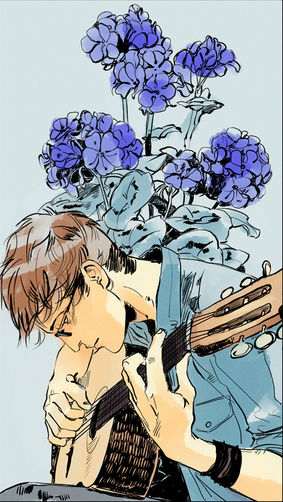

Саймон Льюис
Магнус говорит мне, что я был героем. И я вижу на твоем лице, когда ты смотришь на меня, что ты ищешь того парня. Парня, который, как ты знала, был героем, который совершал великие дела. Я не помню, как делал эти вещи. Я не знаю, если это все еще делает меня героем. Но я бы хотел попробовать снова стать этим парнем.
 Саймон Лавлэйс, рожденный под именем Саймон Льюис - это лучший друг Клэри Фрэй. Примитивный на тот момент, когда они были представлены Сумеречному миру, Саймон был однажды обращен в вампира, и позже в Дневного. После поворота событий, бессмертие Саймона забрали вместе с его воспоминаниями. Для того, чтобы восстановить эти воспоминания, Саймон прошел церемонию Посвящения и сам стал Сумеречным Охотником.
Характер и привычки
К тому времени когда его жизнь поменялась как только он узнал о Сумеречном мире, Саймон был открытым ботаном и басистом в гаражной группе. Его описывали как милого но он даже не осознавал этого. Он был вегетарианцем с десяти лет. Он так же цитировал "занудные" вещи, например Подземелья и Драконы. Он может быть саркастичным и описывает себя как остроумного и ироничного парня.
В какой-то момент после его Обращения в вампира, он начал встречаться с Изабель и Майей в одно и тоже время. Изабель как-то удивляла его и пугала. Она так же заставила его поменять свой занудный стиль одежды. Ему нравилась Майя, с другой сторону, потому что она была приземленная и честная и все еще любит делать нормальные вещи, относясь делая Саймона чувствовать себя нормальным. И все же, даже хотя ему нравились обе девушки в одно и тоже время, он признает что обе девушки - противоположности.
Саймону тяжело когда его Обращают в вампира. Он забывает питаться и можно сказать даже избегает этого. Он не общается с другими вампирами и не знает ничего о их виде. Он пытается вести нормальную человеческую жизнь так как он может ходить под солнцем. Он не понимает как Рафаэль и Камилла могут проговаривать слово "Бог". Когда это слово связано с его еврейской верой, он чувствует себя без его "само-обладания"
.Саймон продемонстрировал что может быть храбрым, когда спасает Джейса, Алека, Изабель и Клэри используя лук Алека против Великого Демона Аббадон. У него есть опят в обучении стрельбы из лука (шесть лет в лагере стрельбы из лука). Саймон трансформируется не только в вампира но так же и в Дневного, но видно как он становиться храбрее и противостоит Валентину. Саймон не только показывает свою верность и храбрость но так же понимание своей уникальной позиции и использует ее, когда просит Клэри нанести на него "Первую Метку, Метку Каина", так что он может быть защищен от Рафаэля и других вампиров которые хотели его убить. Он сдался вампирам и способствовал их сотрудничеству в битве вместе с остальными Сумеречными Охотниками и жителями Нижнего Мира. Саймон хотел убедиться что Дети Ночи будут частью нового Совета.
Саймон был даже готов пожертвовать своей жизнью чтобы спасти Клэри и Джейса отдав свою кровь по приказу Лилит, которая хотела воскресить Себастьяна Моргенштерна. Саймон мог считаться героем когда, он был готов призвать Ангела Разиэля чтобы спасти Джейса, он в конечном счете отказывается от своей "Метки Каина" и отдает ее Ангелу взамен на меч Архангела Михаила "Глориуса", который разделил Джейса и Себастьяна (Джонатана). Саймон сделал это зная что Рафаэль поклялся быть первым на очереди убить его если он когда-нибудь потеряет свою Меткую Саймон доказывает что он не эгоистичен и по-настоящему заботиться о своих друзьях делая это.
В то время как он был вампиром, он так же волновался о жизни после того как его друзья уйдут из жизни, и находил идею навсегда остаться шестнадцатилетним парнем в то время как другие, за исключением Магнуса, состарятся и умрут, угнетающей. Это возможно повлияло на его решение отказаться от своего бессмертия и воспоминаний когда им нужно было выйти из измерения Эдом. Несмотря на это, он продолжил отказываться от вампирской компании предпочитая его друзей.
Внешность
По словам, Саймон - привлекательный, хотя долговязый, с его волосами и глазами темно-коричневого, кофейного цвета и красивыми ресницами.
Саймон часто надевает простую одежду, с футболками с характерными словами. Когда он начал встречаться с Изабель, Саймон стал одеваться более стильно - надевая кожаные куртки вместо толстовок, и дизайнерские ботинки вместо кроссовок.
Саймон носит очки. Сразу как только он стал вампиром, ему больше не нужно было носить очки. Он также отращивал себе волосы пару недель чтобы закрыть волосами Метку Каина на лбу. Будучи вампиром его внешность; улучшилась; в то время как он был уже довольно привлекательным и и милым "ботаном", Саймона-вампира называли красивым и горячим.